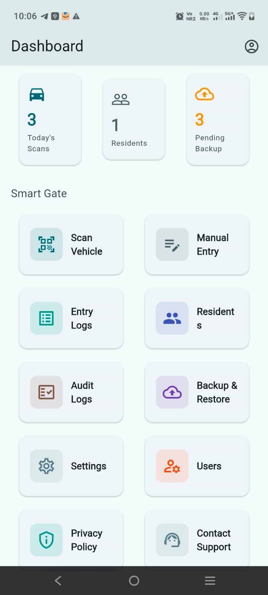
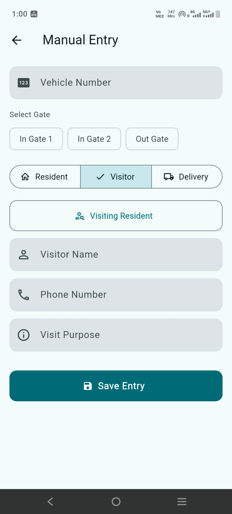

Offline ANPR for fast number plate scanning
About ANPR Smart Gate Tracker
Secure, Simple Gate Management for Apartments and Gated Communities
Smart Gate - ANPR Security is a secure gate management app for apartments, gated communities, and residential campuses.
The app helps security teams scan vehicle number plates, manage entry and exit records, and monitor gate activity with a simple and reliable workflow.
- Offline ANPR
- Role-based access
- Audit logs
Android app · Also called Smart Gate - ANPR Security


Smart Gate is designed to improve gate security, reduce manual errors, and speed up vehicle movement at community entrances.
- Improve gate security
- Reduce manual errors
- Speed up vehicle movement
Key Features
Entry and exit logging with timestamps
Smart detection of existing residents
Role-based access for Admin, Operator, and Viewer
Audit logs for activity tracking
Backup and restore with Google Drive
Secure cloud sync with Firebase
Easy-to-use interface for gate operations
Suitable for
- Apartment complexes
- Residential communities
- Private campuses
- Security teams and gate operators
The app focuses on practical gate operations with secure access, clear records, and dependable performance.
Frequently asked questions
Is number-plate scanning done in the cloud?
No. Text recognition runs on the device, and the entry database is stored on the device.
Who is it for?
Apartment communities: administrators, gate operators and viewers with different permissions.
Does it work without internet?
Yes, the app is designed to work primarily offline. Internet is used for sign-in, licence checks and Google Drive backups.
How do I delete data?
Community administrators can delete entries or clear the log in the app. See the privacy policy for the account deletion request form.
More: ANPR Smart Gate Tracker overview · Support · Privacy policy